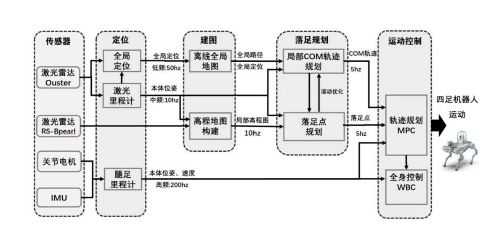

四足机器人运动流程
这是一张非常典型的四足机器人感知-规划-控制系统架构图。它清晰地展示了一个分层控制系统，从传感器数据输入开始，经过多级处理，最终转化为机器人的关节运动。下面我将为您详细拆解这张图的逻辑、原理和实现方式。

总体逻辑与核心思想¶
这张图的核心思想是 “分层控制” 和 “不同频率更新”。
- 分层控制：将复杂的机器人运动问题分解成多个层次的任务，高层为底层提供目标，底层负责精准执行。这样简化了设计，并允许每个层次使用最适合的算法。
- 多频率更新：不同模块的处理频率不同。感知和高层规划可以慢一些（5-50Hz），以保证足够的计算时间进行复杂运算；底层控制必须非常快（200Hz），以实现稳定、敏捷的响应。
整个系统的数据流是自上而下和自下而上的闭环：
环境感知 → 全局定位与地图构建 → 局部运动规划 → 全身协调控制 → 关节执行 → 状态反馈 → 感知...
模块详解：原理与实现¶
我们将系统分为四大板块：感知层、规划层、控制层和执行与反馈层。
1. 感知层¶
目标：回答“我在哪？”和“我周围的环境是什么样的？”这两个问题。
- 传感器：
- 激光雷达：
- Ouster：通常是一种高性能激光雷达，用于全局定位和离线全局地图构建。它的探测距离远、精度高，但数据量大，处理频率较低（50Hz）。
- RS-Bpearl：这是一种专门为地面机器人设计的激光雷达，视场角特别广（尤其在垂直方向），非常适合近距离避障和局部高程地图构建。它处理频率为10Hz。
- 激光雷达：
- 定位：
- 原理：通过将当前激光雷达扫描点云与预先绘制好的离线全局地图进行匹配（点云配准算法，如ICP），来精确计算机器人在全局坐标系中的位置和姿态。这是一个“重定位”过程。
- 实现：使用SLAM技术或其变体。频率较低（50Hz），因为匹配计算量较大。
- 建模：
- 离线全局地图：在任务开始前，使用Ouster等激光雷达预先扫描环境，生成一个静态的、高精度的3D点云地图。
- 局部高程地图：
- 原理：使用RS-Bpearl等近距离激光雷达实时扫描机器人周围的局部区域。将3D点云投影到2D网格中，每个网格存储其对应区域的高度（Z坐标）信息，形成一个2.5D的地图。这非常适合检测脚下的台阶、坑洼等障碍物。
- 实现：频率为10Hz，为落足点规划提供实时地形信息。
2. 规划层¶
目标：回答“我应该把脚踩在哪里？”和“我的身体应该如何移动？”。
- 落足规划：
- 落地点规划：
- 原理：基于局部高程图，评估每个可能的落脚区域。算法会考虑地形的平坦度、坡度、粗糙度，以及该点与机器人当前姿态的可达性。目标是找到一个稳定、安全的落脚点。
- 实现：使用基于规则的成本函数或简单的机器学习模型进行地形评估。频率为5Hz。
- 局部COM轨迹规划：
- 原理：COM是质心。在确定了未来几步的落脚点后，需要规划出一条机器身体质心的平滑运动轨迹。这条轨迹必须保证机器人在迈步时动态稳定（不会摔倒），并且尽可能减少身体的晃动。
- 实现：通常使用简化模型，如线性倒立摆模型。该模型将机器人的复杂动力学简化为一个在点上移动的质量，便于快速生成轨迹。频率为5Hz。
- 落地点规划：
- 运动控制：
- 轨迹规划 MPC：
- 原理：MPC是核心控制器。它接收来自上层的期望COM轨迹和落脚点，同时结合机器人当前的状态反馈。MPC通过一个预测模型，在未来一个短时域内，优化计算出一系列最优的控制指令（如身体的作用力、力矩），并只执行第一步，然后在下一个周期重复优化。这种“滚动优化”的方式使其能很好地处理延迟和模型误差。
- 实现：将机器人的动力学方程作为预测模型，构建一个包含跟踪误差、控制量、稳定性约束的优化问题，并使用数值优化器（如QP求解器）在线求解。频率为5Hz。MPC在这里输出的通常是高阶的躯干运动指令（如加速度、力）。
- 轨迹规划 MPC：
3. 控制层¶
目标：将MPC输出的躯干级指令，分解为具体的每个关节的力矩命令。
- 全身控制：
- 原理：WBC是一种优化控制器。它同时考虑多个任务，并为其分配优先级。
- 高阶任务：例如，保持身体平衡、跟踪MPC给出的躯干运动指令。
- 低阶任务：例如，满足关节角度和力矩的物理限制、在空闲时让关节保持一个舒适的姿势。
- 实现：WBC将MPC的输出（如躯干所需的合外力/力矩）作为一个硬约束或高优先级任务，通过逆动力学计算，求解出每个关节需要输出的精确力矩，以满足这个总需求。它运行在非常高的频率（200Hz），以确保控制的流畅性和快速响应。
- 原理：WBC是一种优化控制器。它同时考虑多个任务，并为其分配优先级。
4. 执行与反馈层¶
目标：执行控制命令，并感知机器人自身的状态，形成闭环。
- 关节电机：接收来自WBC的关节力矩指令，通过电机驱动器输出扭矩，驱动机器人运动。
- IMU：测量机器人的本体加速度和角速度，是估计本体姿态和速度的关键传感器。
- 腿足里程计：
- 原理：通过结合关节编码器读数和腿部运动学模型，计算机器人足端相对于身体的位置。当足端与地面保持固定接触时，可以反向推算出身体本体的位移和速度。这是一种相对定位，在短时间内精度很高，但会累积漂移。
- 实现：与IMU数据进行融合（通常使用卡尔曼滤波器），以提供高频（200Hz）、无漂移的本体位姿和速度估计。这个反馈对于MPC和WBC的稳定运行至关重要。
总结：系统如何协同工作¶
让我们以一个“在杂乱环境中行走”的场景来串联整个流程：
- 初始化：Ouster激光雷达与全局地图匹配，确定机器人的全局定位。
- 实时感知：RS-Bpearl激光雷达以10Hz频率扫描脚下，构建局部高程图。
- 决策与规划：
- 落足规划器（5Hz）查看高程图，找到前方几个安全、平坦的落地点。
- 根据这些落地点，COM轨迹规划器（5Hz）计算出一条身体质心应该遵循的平滑路径。
- 模型预测控制：
- MPC控制器（5Hz）接收期望的COM轨迹和落地点。
- 同时，它从腿足里程计和IMU获得高频（200Hz）的本体实时状态（位置、速度）。
- MPC进行优化计算，得出为了跟踪轨迹，身体所需施加的总力和力矩。
- 全身力矩分配：
- WBC（200Hz）接收MPC的指令，并结合所有关节的实时状态。
- 它通过优化计算，将总力和力矩精确地分配给12条腿的每个关节，输出关节力矩命令。
- 执行与反馈：
- 关节电机执行力矩命令，机器人开始运动。
- IMU和关节编码器立即感知到运动带来的变化，并通过腿足里程计计算出新的本体状态。
- 这个新的状态反馈给MPC和WBC，形成一个闭环。MPC在下一个控制周期（0.2秒后）会根据新的状态重新优化，从而适应实际地形和机器人的动态变化。
通过这种分层、多频率的架构，四足机器人能够实现复杂环境下的稳定、敏捷和自适应运动。MPC负责前瞻性的“策略”制定，而WBC负责底层的“战术”执行，两者结合，构成了现代高性能足式机器人的核心控制范式。